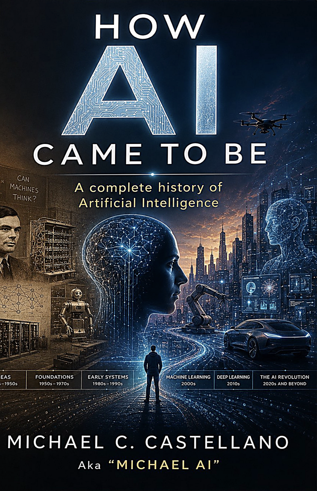

A Complete History of Artificial Intelligence
From the question Alan Turing scrawled across the century — can machines think? — to the machines now answering it, this is the whole story of artificial intelligence: the foundations, the winters, the breakthroughs, and the revolution underway.
Told by someone who was there. In 2010, the author filed U.S. Patent 10,956,965 — conversational interaction between humans and machines — a decade before the world caught up. This history is written from inside the arena.
Turing, the Dartmouth workshop, the first neural nets — the audacious decades when "artificial intelligence" was a promise no machine could keep.
Expert systems, AI winters, machine learning's slow ascent — and a 2010 patent for human-machine conversation, filed when the idea still sounded like science fiction.
Deep learning, transformers, and the conversational intelligences of today — how the question became the answer, and what comes next.